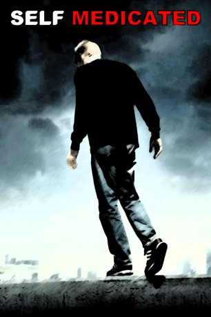

#10473 Own Demon
Alternativ: Self Medicated (Englischer Titel)
 
 IMDB-Wertung: 6.0 / 10
IMDB-Wertung: 6.0 / 10  Metascore: 51
Metascore: 51 
Am Rande von Las Vegas gerät das Leben des 17-jährigen Andrew (Monty Lapica) völlig außer Kontrolle. Er kann den Tod seines Vaters nicht richtig verarbeiten und stürzt sich in einen Sumpf voller Drogen und Gewalt. Der einst talentierte Junge, scheint den Weg der Selbstzerstörung gewählt zu haben. Andrews Mutter (Diane Venora) fühlt sich völlig hilflos und will nicht dabei zusehen, wie ihr einziger Sohn sein Leben kontinuierlich zu Grunde richtet. Sie engagiert eine private Gesellschaft, die ihren Sohn entführen soll. Andrew wird in einem psychiatrischen Krankenhaus eingesperrt und soll dort geheilt werden. Doch die Anstalt führt korrupte Geschäfte und will Andrew für ein geheimes Forschungsprogramm missbrauchen. Dies erweckt in Andrew den Willen zum Leben. Er weiß jedoch, dass er sich, um der Anstalt zu entfliehen, zuerst seinen eigenen Ängsten und Dämonen stellen muss.
Jahr: 2005
Dauer: 106 Minuten
FSK: 16
Land: USA Studio: Seventh Art ReleasingTonspuren: DTS - ,
Untertitel:
Auflösung: 1080p (1920x816) Größe: 7270 MB
Genre: Drama, Biographie
Regisseur: Monty Lapica
Drehbuch: Monty Lapica
Soundtrack: Anthony Marinelli
Darsteller:
- Monty Lapica als Andrew Eriksen
 Diane Venora als Louise Eriksen
Diane Venora als Louise Eriksen Michael Bowen als Dan Jones
Michael Bowen als Dan Jones Greg Germann als Keith
Greg Germann als Keith- Kristina Anapau als Nicole
- Matthew Carey als Aaron
- Shane Stuart als Seth Calenes
 William Stanford Davis als Gabe
William Stanford Davis als Gabe Michael Mantell als Dr. Reinholtz
Michael Mantell als Dr. Reinholtz- Faleolo Alailima als Kawa
- Kelly Kruger als Tori
- Karim Prince als Steve
 Noah Segan als Trevor
Noah Segan als Trevor- Marcus Toji als Mike
- Jeremy Rowley als Paintball Victim #3's Friend
- Nathan Sabatka als Young Andrew Eriksen
- Ray Benson als Andrew's Father
- Randy Crowder als Teacher
- Amy Benedict als Bonanza High School Secretary
- Jennifer Parsons als Mrs. Fehringer
- Staci Cross als Jessica
- Cathy Lind Hayes als Brightway Nurse
- Enrique Sapene als Self-Mutilator
- Kelli Barksdale als Brightway Patient
- Eric Fagundes als Brightway Patient
- Chris Leone als Brightway Patient
- Amie Barsky als Back-Up Exerciser
- Stephanie Quayle als Back-Up Exerciser
- Zach Moyes als Aaron's Brother
- Danica Stewart als Party Girl #1
 Terence Bernie Hines als Security Guard
Terence Bernie Hines als Security Guard- Karim Imam als Hawaii Security Guard
- Anna Chudoba als Nurse in Hawaii
- Richard Weisner als Mikey
- Glenndon Chatman als John
- Travis Stanberry als Paintball Victim
- Eric Vorperian als Paintball Victim's Friend
- Carey Simon als Paintball Victim #3
- Luke O'Gara als Bicyclist on Strip
- Sky Porter als Cop on Strip
- Jai Mike als Weed Dealer
- Steve Oberg als Party DJ
- Tyler Greenan als Bong Ripper
- Joe Coury als Drunk Kid with Bottle
- Christopher Brown als Nitrous Oxide Patron
- Jake Charles als Nitrous Oxide Dealer
- Lauren Boiros als Seth's Girlfriend
- Heather Cazden als Mikey's Girlfriend
- Bobby Jaggers als Big Jock
- Jamie Chung als Brightway Patient
Datei: X:\2005(N-Z)\Own Demon (2005, FSK16, 1920x816).mkv seit 11.01.2019
Festplatte: HD 2005(G-Z)-2006(A-Z)
 Es gibt insgesamt 50 Filme in der Gruppe '2005(N-Z)'
Es gibt insgesamt 50 Filme in der Gruppe '2005(N-Z)'